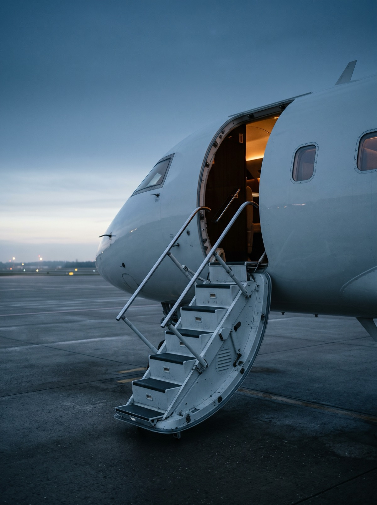
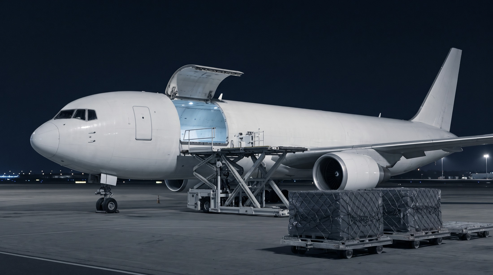

Ana Sayfa · Charter
Özenle Organize Edilen Charter
Charter hizmetini broker olarak veriyoruz. Rotanız için ticari işletmecilerden seçenekleri bulur, ayrıntıları sizinle planlarız.
Organize Ettiğimiz Uçuşlar
Rotanızı, tarihinizi ve kapasite ihtiyacınızı paylaşın; ticari işletmeciler arasından en uygun hava araçlarını belirleyip karşılaştıralım.

Özel Uçuşlar
İş seyahatleri, aile yolculukları ve kısa sürede planlanan uçuşlar için; zamanlamanıza göre.
Teklif İste
Grup Uçuşları
Ekipler, şirketler ve etkinlik organizatörleri için; gruba uygun büyüklükte uçakla.
Teklif İste
Kargo Uçuşları
Zamanı kritik gönderiler için, ticari bir işletmecinin uygun kargo uçağıyla.
Teklif İsteCharter Talebi Nasıl İşler
Charter uzmanlarımızla birlikte planlanan dört adım.
Seyahati Paylaşırsınız
Rota, tarih, yolcu sayısı ve sizin için önemli olanlar.
Alternatifleri Eşleştiririz
Rotanızı ticari işletmecilerin uygun hava araçlarıyla eşleştiririz.
İnceler ve Onaylarsınız
Onaylamadan önce yazılı teklifi incelersiniz.
Ayrıntıları Planlarız
Seyahat boyunca ekibimiz muhatabınız olur.

Charter Brokerlığı Nasıl İşler
Uçak sahibi ya da işletmecisi değiliz. Charter uçuşları, uçuşun gerektirdiği hava işletme sertifikasına (AOC) sahip ticari işletmeciler tarafından gerçekleştirilir; broker olarak uçuşunuzu bunlardan biriyle organize ederiz. Bu sayede rotanız için farklı işletmecilerin seçeneklerini karşılaştırabiliriz.
Ne Yapıyoruz
- Seyahatinizi ve sizin için önemli olanları anlamak
- Ticari işletmeciler arasından rotanıza en uygun hava araçlarını belirlemek ve karşılaştırmak
- Seçenekleri ve yazılı teklifi sunmak
- Seyahat boyunca muhatabınız olmak
İşletmeci Ne Yapar
- Uçuşu kendi hava işletme sertifikası (AOC) kapsamında gerçekleştirir
- Uçağı ve ekibi sağlar
- Uçuşun işletilmesinden sorumludur
Doğru Uçağı Seçmek
Doğru hava aracı rotanıza, yolcu sayınıza veya yük tonajınıza göre belirlenir. Aşağıdaki sınıflar, bölgemizde ve uzun menzilli hatlarda en sık organize ettiğimiz hava araçlarını temsil eder.
Kısa Menzilli İş Uçuşları
Hafif ve Süper Hafif Jetler
Kısa ve orta menzilde hızlı iş seyahatleri; daha kısa pistli bölgesel meydanlara esnek erişim.
- Yolcu
- 6–8
- Menzil
- 1.500–2.000 nm
- Uçuş süresi
- 2,5–3,5 saat
- Cessna Citation V / Ultra
- Citation CJ Serisi
- Embraer Phenom 300
Bölgede En Çok Talep Edilen Sınıf
Orta ve Süper Orta Boy Jetler
Bölgedeki özel uçuşların belkemiği: Türkiye’den Avrupa, Körfez ve Orta Asya’ya; ayakta durulabilen kabin ve geniş bagaj hacmiyle.
- Yolcu
- 7–9
- Menzil
- 2.100–2.615 nm
- Uçuş süresi
- 4–5,5 saat
- Hawker 800XP / 850XP8 yolcu · 2.540–2.615 nm
- Hawker 7507–8 yolcu · 2.100 nm
- Cessna Citation VII8 yolcu · ~2.200 nm
Geniş Kabinli İş Jetleri
Büyük Jetler
Tam boy ayakta durulabilen kabin, sıcak ikram mutfağı ve kabin görevlisi; uzun uçuşlarda heyetler ve aileler için.
- Yolcu
- 10–16
- Menzil
- 2.840–5.500 nm
- Uçuş süresi
- 6–11 saat
- Bombardier Challenger 605 / 65010–12 yolcu · 4.000 nm
- Dassault Falcon 2000 / 2000LXS8–10 yolcu · 2.840–4.000 nm
- Gulfstream G400 / G45012–16 yolcu · 4.200–4.350 nm
- Dassault Falcon 6X12–16 yolcu · 5.500 nm
Kıtalararası Menzil
Çok Uzun Menzilli Jetler
Üç kabin bölümü ve yatağa dönüşen koltuklar; rotaya ve yüke bağlı olarak yakıt ikmali için inmeden kıtalararası uçuş menzili.
- Yolcu
- 12–16
- Menzil
- 5.950–6.750 nm
- Uçuş süresi
- 12–14 saat
- Bombardier Global Express / XRS13–16 yolcu · 6.000–6.200 nm
- Gulfstream G55014–16 yolcu · 6.750 nm
- Dassault Falcon 7X12–14 yolcu · 5.950 nm
Takımlar, Etkinlikler ve Heyetler
Gruplar için Yolcu Uçakları
Spor takımları, kurumsal etkinlikler ve heyetler için grubun büyüklüğüne ve mesafeye göre dar ya da geniş gövdeli yolcu uçakları.
- Yolcu
- 150–300+
- Menzil
- 2.700–6.000+ nm
- Gövde
- Dar ve geniş gövde
- Airbus A320 / A321150–220 yolcu · ~3.000 nm
- Boeing 737-800160–189 yolcu · ~2.900 nm
- Airbus A330-200 / A330-300250–300+ yolcu · 6.000+ nm
Acil, Paletli ve Gabari Dışı Kargo
Kargo Uçakları
Acil gönderilerden standart paletli yüklere, ağır ve gabari dışı kargoya kadar; uçak yüke göre seçilir.
- Yük
- 18–124 ton
- Hacim
- 90–670+ m³
- Yükleme
- Yan kapı, burun kapısı, rampa
- Boeing 737-800F~23,9 t · 2.000 nm
- Airbus A320P2F~21 t
- Airbus A330-200F70 t · 4.000 nm
- Boeing 747-400F112–124 t · burun kapısı
- Ilyushin IL-76TD45–50 t · arka rampa
- Antonov An-1218 t · arka rampa
Rakamlar her sınıf için tipik değerlerdir; uçağa, konfigürasyona ve yüke göre değişir. Uçuşları ticari operatörler gerçekleştirir; uygunluk tarihe ve rotaya bağlıdır. Hangisinin uygun olduğundan emin değil misiniz? Seyahat bilgilerini gönderin, ekibimiz seçenek önersin.
Charter Soruları
Yolcuların ve organizatörlerin ilk sorduğu sorular. Diğer sorularınız için charter ekibimize mesajla ulaşabilirsiniz.
Operasyona UlaşınUçakların sahibi ya da işletmecisi misiniz?
Hayır. Charter hizmetini broker olarak veriyoruz. Charter uçuşları, uçuşun gerektirdiği hava işletme sertifikasına (AOC) sahip ticari işletmeciler tarafından gerçekleştirilir; uçuşunuzu bunlardan biriyle organize ederiz.
Talep başlatmak için neye ihtiyacınız var?
Rota, tarih, yolcu sayısı ve size nereden ulaşabileceğimiz. Form yalnızca bu bilgileri ister.
Başka neleri belirtmeliyiz?
Tercih ettiğiniz saatler, bagaj (özellikle büyük ya da özel eşyalar) ve özel istekleriniz. Uçuşunuz için önemli başka bir şey varsa ekibimiz sorar.
Kısa süre kala uçuş organize edebilir misiniz?
Kısa süre kala gelen talepleri de değerlendiririz. Neyin mümkün olduğu o an uygun uçaklara ve işletmecilere bağlıdır; seçenekleri size iletiriz.
Kargo uçuşu da organize ediyor musunuz?
Evet. Zamanı kritik, paletli veya gabari dışı yükler için ticari işletmecilerden uygun kargo uçağını tedarik ediyor ve uçuşu uçtan uca koordine ediyoruz.
Charter Teklifi İste
Bilgileri gönderin. Tarihiniz için teklifle ya da uygun seçeneklerle döneriz.
Aramak ya da yazmak mı istersiniz? Operasyon ekibimize ulaşınOperasyon Ekibimize Ulaşın
Zamanı kritik bir ikmal, bir program değişikliği ya da yeni bir seyahat: talebinizi planlayan yakıt ya da charter ekibine telefon, mesaj ya da e-postayla ulaşın.
Bilgilerinizi talebinize yanıt vermek için kullanırız. KVKK Aydınlatma Metni